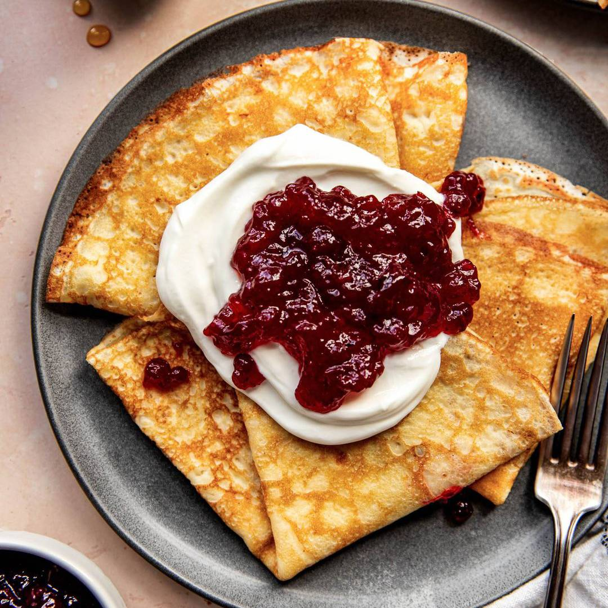
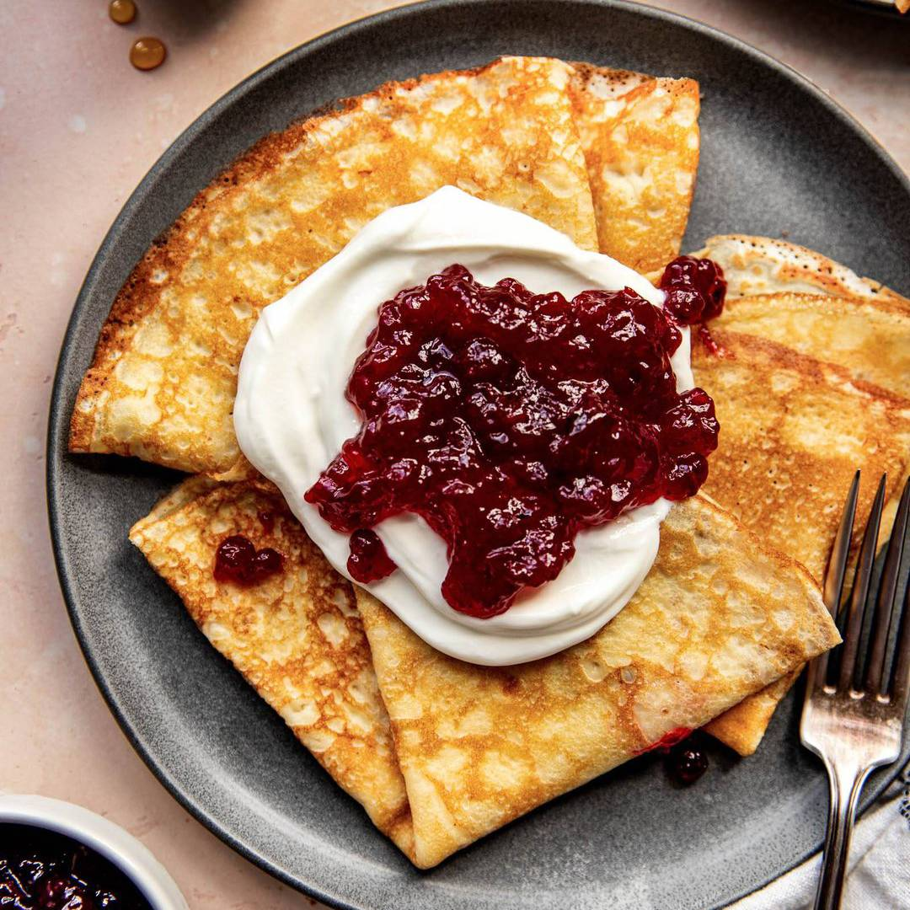

Double Chocolate Cookies
Origin:
- Michigan
Source:
- Family Recipe
Category:
- Dessert

My daughter learned to make these cookies at a baking camp at Zingermanns and has tweaked the recipe to fit the taste buds of her siblings. They are extremely sugary so the salt helps to balance it. Note, these cookies are best eaten very quickly.
Recipe Ingredients
- 1 cup unsalted butter
- 1 cup granulated sugar
- 1 cup packed light or dark brown sugar
- 2 large eggs
- 1 teaspoon pure vanilla extract
- 2 cups semi-sweet chocolate chunks (melted)
- 2 1/2 cups all-purpose flour
- 1/2 cup natural unsweetened cocoa powder
- 1 teaspoon baking soda
- 1/2 teaspoon salt
- 1 1/2 cups semi-sweet chocolate chunks
Recipe Steps
- In a mixing bowl cream together the butter, granulated sugar, and brown sugar
- Add the egg and vanilla extract and beat well
- Add the melted chocolate
- In a separate bowl combine the flour, baking soda, cocoa powder and salt
- Combine the wet and dry ingredients
- Add the unmelted chocolate chunks
- Form 15 cookies and place on a baking sheet
- Cook for 12 to 13 minutes at 350 degrees
Additional Food images


Swedish Pancakes
Origin:
- Swenden
Source:
- Kristi
Category:
- Breakfast

Swedish pancakes can be enjoyed at any time of the day, making them a versatile dish that’s equally suitable for a leisurely breakfast, a cozy brunch, or a light dinner. Their popularity extends beyond Sweden, capturing the hearts of food enthusiasts worldwide with their delicate texture and delicious flavor.
Recipe Ingredients
- Butter
- Sugar
- Vanilla extract
- Eggs
- Milk
- Water
- Salt
- Flour
Recipe Steps
- Combine all ingredients in a blender and blend until completely smooth.Transfer to the refrigerator to rest for at least 2 hours or up to 2 days
- Preheat the oven to 200 degrees if you plan to eat the pannkakor right away
- Heat a 10 inch nonstick skillet over medium heat
- Stir the batter briefly to recombine. Brush skillet with melted butter
- Immediately begin swirling the batter around the skillet so that it coats the bottom of the pan
- Continue swirling until the butter is just set
- Return skillet to the burner. Cook until the pancake is golden brown in spots on the bottom, about 30 seconds
- Use a thin spatula to loosen the pancake, flip it over continue to cook on the other side for about 30 seconds. Transfer to a plate
- Cover with foil and transfer to oven to keep warm and repeat with remaining batter, wiping out skillet in between pancakes with paper towel as needed
Additional Food images

 

Coca-Cola Chicken Wings
Origin:
- China
Source:
- Family Recipe
Category:
- Main Dish

I learnt how to cook Coca-Cola chicken wings from my mother, and I've since tweaked her recipe to better suit my family's palate, making it less sweet. While the cooking process remains straightforward, the result is incredibly flavorful, and once you've tried it, you'll understand its delicious appeal!
Recipe Ingredients
- Chicken wings
- Scallions
- Ginger slices
- Cooking wine
- Dark soy sauce
- A can of coke
Recipe Steps
- Wash and place chicken wings in a bowl
- Add scallions, ginger slices, cooking wine, dark soy sauce and salt to the washed chicken wings, and mix them well
- Cover the bowl with plastic wrap and marinate the chicken wings for 1 hour
- Put the right amount of oil in the pot, and put the marinated chicken wings into the pot and fry it until golden brown on both sides
- After fry the chicken wings until golden brown on both sides, then pour a can of coke into the pan and bring to a boil
- Add the unmelted chocolate chunks
- Continue to cook for an additional 2-3 minutes until the glaze has thickened and coats the wings nicely
- Transfer the Coca-Cola glazed chicken wings to a serving platter
Additional Food images